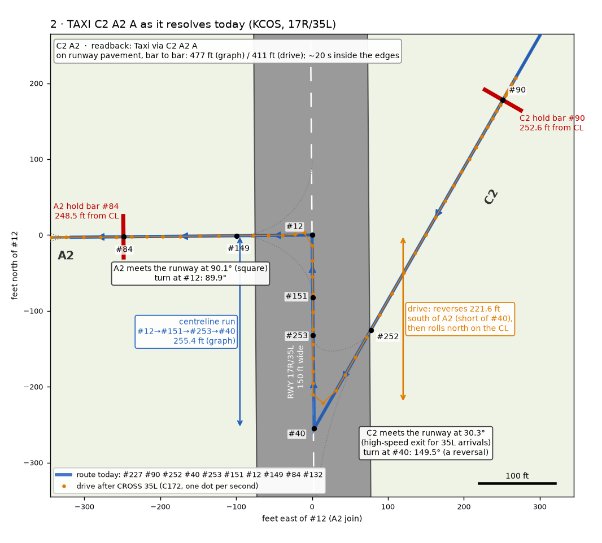
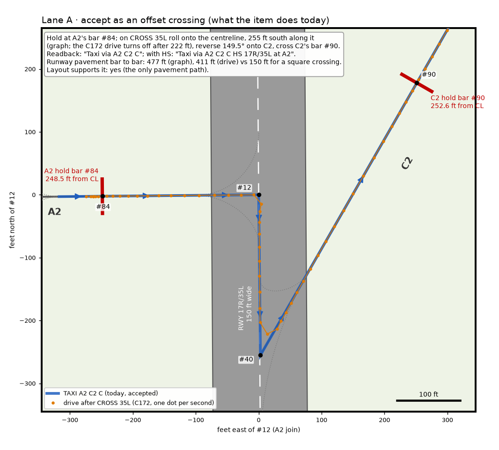
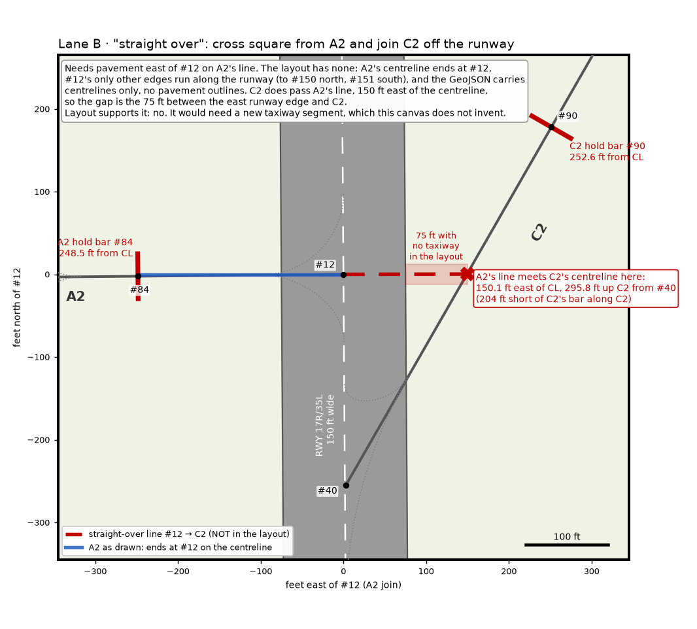
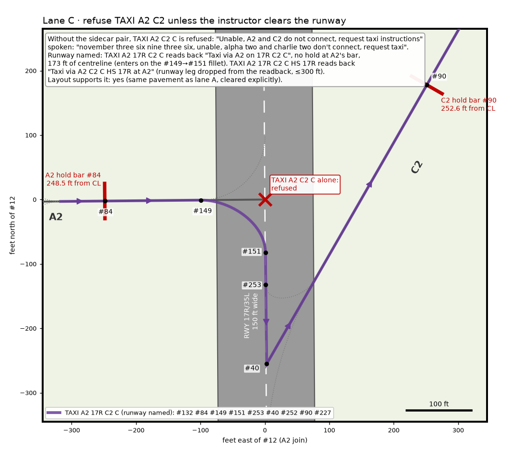
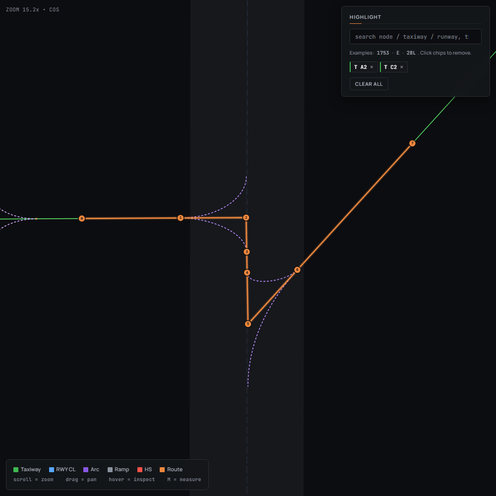

YAAT-899: why KCOS TAXI A2 C2 drives along 17R/35L after CROSS
A2 and C2 do not meet the runway at the same place. In the layout, A2 ends on the centreline at node #12 and C2 ends on it at #40, 255.2 ft further south. Node #12 has no other edge except the runway itself, north and south, so the only pavement from A2 to C2 runs 255.4 ft down the centreline. At #40 the route then turns 149.5° back onto C2, a high-speed exit built for 35L arrivals that leaves the runway 30.3° off its line. C2 then climbs north-east and crosses A2's extended line 150 ft east of the centreline, before its own hold bar. That is why the two read as "facing each other" on a diagram. But the layout has no pavement along that line, so the "straight over" crossing has nothing to drive on.
CROSS 35L, one dot per second
17R/35L hold bars
runway pavement, 150 ft wide
dotted: fillet arcs the route does not use
1 · TAXI A2 C2 C as it resolves today
Readback Taxi via A2 C2 C; with HS 35L it is Taxi via A2 C2 C HS 17R/35L at A2. One hold short, at A2's bar #84 (RunwayCrossing), and after CROSS 35L the aircraft never holds again. It stays in CrossingRunwayPhase until it is past C2's bar #90.
#147 → #131 → #1 → #132 → #84 A2 bar → #149 → #12 A2 join ⟶ #151 ⟶ #253 ⟶ #40 C2 join → #252 → #90 C2 bar → #227 → #226 → #33 (C2/C)
⟶ marks runway centreline edges: 82.1 + 50.0 + 123.3 = 255.4 ft, the figure SegmentExpander.CenterlineLengthFt gives, under the 300 ft bound. The route turns 89.9° at #12 and 149.5° at #40, both as point turns: it uses neither fillet arc.
2 · TAXI C2 A2 A as it resolves today
Readback Taxi via C2 A2 A; with HS 35L it is Taxi via C2 A2 A HS 17R/35L at C2. One hold short, at C2's bar #90. The route is the same pavement in reverse: 149.5° at #40 onto the centreline northbound, 255.4 ft of centreline, then 89.9° at #12 onto A2.
#33 → #226 → #227 → #90 C2 bar → #252 → #40 C2 join ⟶ #253 ⟶ #151 ⟶ #12 A2 join → #149 → #84 A2 bar → #132 → #1 (A2/A)

3 · Measured
Positions come from the runtime graph that TestAirportGroundData builds from TestData/COS.geojson. Along-track is feet north of #12 along the runway line (#40 → #150, 359.60° true), and cross-track is feet east of the centreline.
| Quantity | Value | Source |
|---|---|---|
| A2 join, node #12 | 38.812600, −104.715910 · along 0.0 · cross 0.0 | graph node |
| C2 join, node #40 | 38.811900, −104.715900 · along −255.2 · cross +1.1 | graph node |
| Distance #12 → #40 along the centreline | 255.2 ft straight; 255.4 ft over the edges #12→#151→#253→#40 | CenterlineLengthFt |
| A2 hold bar #84, from the centreline | 248.5 ft west (along −0.6) | graph node |
| C2 hold bar #90, from the centreline | 252.6 ft east, 176.2 ft north of #12; 499.7 ft along C2 from #40 | graph node |
| Hold-short standoff | not authored in the vNAS map; 250 ft from the width rule | HoldShortDistanceFt = null, HoldShortDistanceForWidth(150) |
| Runway width | 150 ft | GroundRunway.WidthFt (navdata) |
| A2's angle to the runway | 90.1° (square) | bearing #12→#149 vs runway line |
| C2's angle to the runway | 30.3° (C2 leaves #40 on 29.85° true) | bearing #40→#252 vs runway line |
| Route's turns between the bars | 89.9° at #12, 149.5° at #40, no arcs | route segments |
| Route length, bar to bar | 1,003.1 ft | route polyline |
| Feet of the run inside the runway pavement (|cross| ≤ 75 ft) | 477.0 ft (graph) · 411.0 ft (drive A2→C2) · 411.4 ft (drive C2→A2) | route polyline / drive positions, sampled |
| Time inside the runway edges | about 21 s (A2→C2, samples t=53–73) · about 20 s (C2→A2, t=62–81) | drive, 1 s ticks |
| Along-runway travel in the drive | 221.6 ft (A2→C2) · 224.6 ft (C2→A2) | drive: it cuts the 149.5° corner 34 ft short of #40 |
| For comparison: a square crossing | 150 ft of pavement | runway width |
4 · Lanes for the owner
A · offset crossing (today) layout: supported
Hold at the entry bar, and on CROSS roll 255 ft down the centreline, reverse onto C2 and cross C2's bar without stopping. It is the only pavement path the layout has. Cost: 411–477 ft and about 20 s on 17R/35L, plus a reversal onto a high-speed exit, the use 7110.65 §3-7-2.c NOTE tells controllers to avoid as a crossing point.

B · straight over layout: not supported
Cross square from A2 and join C2 off the runway. A2's line meets C2's centreline 150.1 ft east of the runway centreline: 75 ft beyond the east edge, 295.8 ft up C2 from #40 and 204 ft short of C2's bar. The layout has no taxiway on those 75 ft. Its GeoJSON carries centrelines only, A2's LineString ends at the runway (−104.71591), and #12 has no edge to the east. This lane needs a new segment in the layout, which this canvas does not invent. Whether real KCOS has pavement there was not checked.

C · refuse unless the runway is cleared layout: supported
Drop the sidecar pair, and TAXI A2 C2 C is refused with Unable, A2 and C2 do not connect, request taxi instructions. Spoken: "november three six nine three six, unable, alpha two and charlie two don't connect, request taxi". The instructor then names the runway:
TAXI A2 17R C2 Creads backTaxi via A2 on 17R C2 C, with no hold at A2's bar because the runway is cleared. It runs 173.3 ft of centreline, entering on the #149→#151 fillet, and 436.6 ft of pavement.TAXI A2 17R C2 C HS 17Rreads backTaxi via A2 C2 C HS 17R at A2. The runway leg drops out of the readback because it is under 300 ft.TAXI C2 35L A2 Areads backTaxi via C2 on 35L A2 A. It runs 50.0 ft of centreline, using the #252→#253 fillet.

5 · Side findings, not part of the ruling
- The offset-crossing route takes no fillets. Between the bars it turns as points at #12 (89.9°) and #40 (149.5°). The C172 drive cut the #40 corner, turning 221.6 ft south of #12 and slowing to 8.7 kt. Two arcs exist: #149→#151 (57 ft) and #253→#252 (18 ft). The pinned leg ends exactly at the join node, so the crossing route never uses them. How a jet would drive the 149.5° point was not measured.
- The named-runway form is asymmetric.
TAXI A2 17R C2 Cstill pivots 149.5° at #40, though the 18 ft fillet #253→#252 exists.TAXI C2 35L A2 Auses that fillet in the other direction. - Lane C's refusal names the wrong pair for
C2 A2 A. With the pair undeclared,TAXI C2 A2refuses correctly ("C2 and A2 do not connect", all 7 bridges dropped).TAXI C2 A2 Ainstead logs[detour] found detour C2→A2 via #12 segs=25, a bridge that lands on a centreline node. It then refuses "Unable, A2 and A do not connect", although A2 and A meet at #1. The line responsible was not traced. This matters only if lane C removes the sidecar pair.
6 · LayoutInspector's own render of route 1
--html-route 84,149,12,151,253,40,252,90, screenshotted at a close-up view. The route stops are numbered 0–7 in that order. The inspector stretches its projection to the window, so east–west distances and angles look wrong: C2 appears near 45°. Read angles from the to-scale figures above.

How it was measured
The data comes from a temporary test in the item tree (branch yaat-899, uncommitted; since deleted). It loaded KCOS through TestAirportGroundData and dumped every node and edge within 1,400 ft of #12. It resolved each route with GroundCommandHandler.TryTaxi, a C172 starting at the taxiway's far node and nosed toward its join, as Issue899DetourConnectorTests does.
It then drove each route through SimulationEngine: TAXI, ticks until HoldingShortPhase, then CROSS 35L, with the position logged every second. Lane C's commands went through SimulationEngine.SendCommand. Its refusal was measured with NavigationDatabase.ScopedOverride(NavigationDatabase.ForTesting()), an empty sidecar catalogue, so the A2/C2 pair was undeclared without editing cos.json.
The figures are drawn to scale, north up, from those node positions, edges and drive positions. Lane B's dashed line and the shaded 75 ft are the only drawn geometry not taken from the layout, and they are labelled as absent from it.